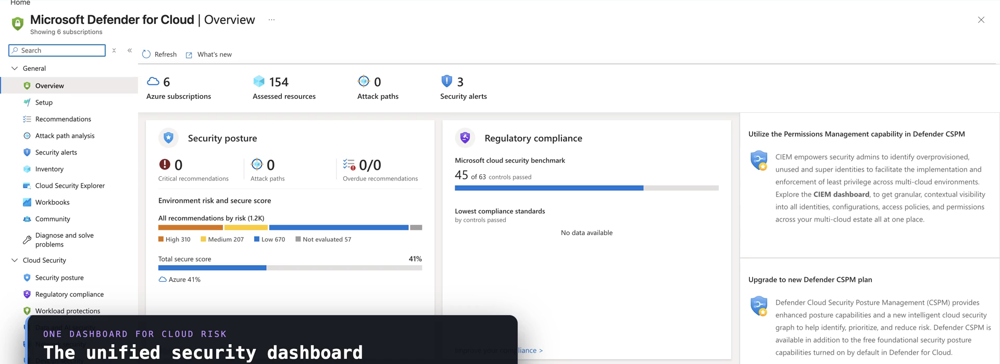
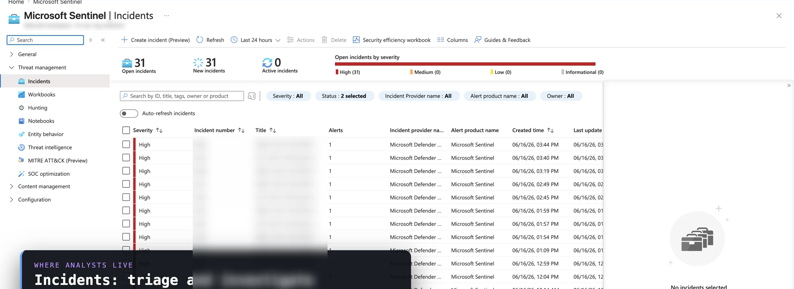

SC-100 · Domain 1 — Best Practices & Priorities
Security Strategy
& Resiliency
Two decisions every cybersecurity architect makes: what to protect first, and how to stay standing when an attack lands.
PRIORITIZE → WITHSTAND → RECOVER
Setting prioritiesNETWORK INTELLIGENCE · SC-100
Protect what matters, in order
You don't secure everything at once
Grounded · AZ-500 · Defender for Cloud
Posture is the priority signal
Rank business-critical assets and the threats to them. The frameworks are the toolkit — Zero Trust the strategy, MCRA the picture, MCSB the checklist measured here in Secure Score.
Because we assume breach, resiliency is a first-class design goal — not an afterthought.
portal.azure.com — Microsoft Defender for Cloud

The resiliency modelNETWORK INTELLIGENCE · SC-100
Microsoft's three phases — in priority order
Protect against ransomware & extortion
1
Prepare a recovery plan
Recover without paying. Secure, tested backups remove the attacker's incentive.
→
2
Limit the scope of damage
Protect privileged roles so an intruder can't reach business-critical systems.
→
3
Make it hard to get in
Incrementally remove risk at the entry points — identity, email, endpoints.
Recovery comes first. Work on Phase 3 must never slow Phases 1 and 2.
Phase 1 · Recovery planNETWORK INTELLIGENCE · SC-100
Secure backups — the floor under everything
A backup an attacker can encrypt isn't protection
3
copies
original + two backups
2
media types
don't share one failure mode
1
offsite / cold
air-gapped, out of reach
IMMUTABLE or OFFLINE
MFA / PIN TO MODIFY
PROTECT AD + RECOVERY DOCS
TEST: "RECOVER FROM ZERO"
MTTR MEETS BC/DR GOAL
Phase 2 · Limit the blast radiusNETWORK INTELLIGENCE · SC-100
Privileged access caps the worst case
Make a foothold expensive
portal.azure.com — Microsoft Entra Privileged Identity Management

Grounded · AZ-500 · Entra PIM
Just-in-time, not standing
The more privilege an attacker gains, the higher the damage. PIM makes admin access eligible, time-bound, and MFA-gated — so a compromised account can't pivot to everything.
This is the same "protect privileged access first" priority RaMP leads with.
When it actually happensNETWORK INTELLIGENCE · SC-100
Restore discipline & BC/DR
Your backup list is your restore list
- Restore business-critical systems first — the top five, not everything at once. Bring identity services back before the rest.
- Validate the backup is clean before restoring — find a safe point-in-time image and scan it, so you don't reinfect.
- Exercise "Recover from Zero" — assume every system, including AD and email, is down. The gap you find is your roadmap.
- Resiliency is one discipline — ransomware, a region outage, or accidental deletion all draw on the same tested plan.
How Domain 1 sets up the restNETWORK INTELLIGENCE · SC-100
Detect, respond, recover
Priorities flow into every other domain
Grounded · AZ-500 · Microsoft Sentinel
Recovery needs detection
You can't recover from what you never saw. Phase 2 → Domain 2 privileged access. Secure backups & Defender → Domain 3 infrastructure. Detection & response → SecOps in Sentinel.
Domain 1 sets the floor; Domains 2–4 build the capabilities.
portal.azure.com — Microsoft Sentinel · Incidents

RememberNETWORK INTELLIGENCE · SC-100
Security Strategy & Resiliency in five rules
The architect's resiliency floor
- 1 · Prioritize by business-critical assets; frameworks are the toolkit, not the goal.
- 2 · Three phases, in order: recovery plan → limit scope → make it hard to get in.
- 3 · Secure backups = immutable/offline + MFA-protected + 3-2-1 + tested.
- 4 · Protect privileged access to cap the blast radius (Phase 2).
- 5 · Resiliency is assume-breach in action — a Zero Trust outcome.
Hands-on · 1 of 2NETWORK INTELLIGENCE · SC-100
Do this
Rank your crown jewels
GOAL · Build the backbone of your priority and restore order
- List your top five business-critical systems and the single threat most likely to take each down.
- For each, score the backup: immutable or offline? MFA/PIN-protected? 3-2-1?
- Any "no" is a Phase-1 quick win.
✓ DONE WHEN · You have a ranked list that doubles as your restore order
Hands-on · 2 of 2NETWORK INTELLIGENCE · SC-100
Do this
Run a "Recover from Zero" tabletop
GOAL · Prove the resiliency floor actually holds
- Assume every system is down — including Active Directory and email.
- Walk the restore order; confirm the recovery docs survive; bring identity back first.
- Measure whether your MTTR meets the BC/DR goal.
✓ DONE WHEN · The gap between target and actual is written down as your roadmap